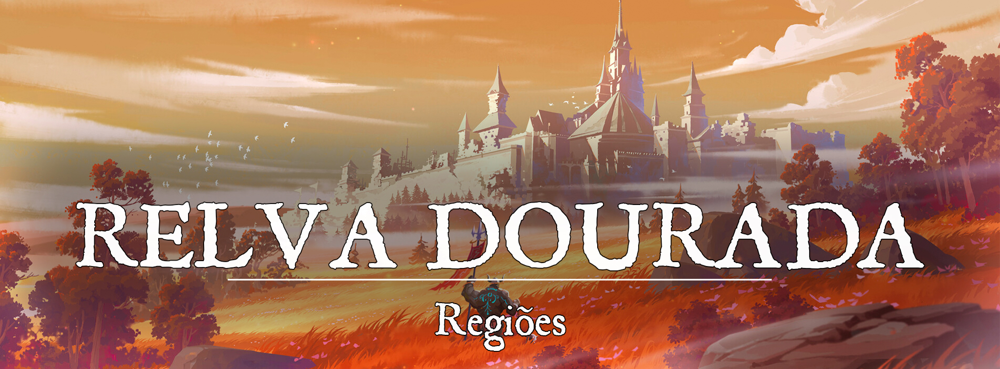

Relva Dourada
Descrição
Relva Dourada, conhecida por suas montarias deslumbrantes, pelos campos de girassóis e como um dos lugares mais confortáveis para descansar. A cidade em si é antiga, datada de antes da primeira era, e sua primeira localização estava situada mais ao leste, próximo do pântano. Os velhos prédios foram abandonados quando o pântano começou a invadir as Terras do Girassol. Posteriormente, uma nova Relva Dourada floresceu.
Existem muitos motivos para se fazer um banquete ou festejar uma simples vitória em Relva Dourada. A nobreza se dedica imensamente em ostentar suas riquezas e conquistas. O clima quase sempre agradável de Relva Dourada, no entanto, esconde os problemas sombrios da cidade. O coração do Pântano Vil de Raulan espreita aos arredores de Relva Dourada, ocasionalmente liberando suas crias nas Terras do Girassol.
Descrição Visual:
unknown (43).png |Relva Dourada
{kind=link}
A cidade de Relva Dourada é deslumbrante mesmo de longe, sempre vista cercada por seus campos de girassóis e por sua grama dourada como ouro. As muralhas da cidade foram erguidas com pedras brancas e encantadas com feitiços antigos e duradouros. Os telhados das casas de Relva Dourada sempre estão pintados com cores vivas, como verde, vermelho ou amarelo.
Relva Dourada teve a decência de reconstruir seus edifícios ao longo das gerações, e mesmo os bairros mais pobres possuem uma certa modéstia. A cidade é dividida por um rio e ambos os lados são conectados por duas pontes apelidadas de As Irmãs. Cada lado é um distrito que se subdivide em outros bairros. Do lado oeste do rio há o Relvado Alto, bairro da nobreza, dos grandes estábulos de Relva Dourada e das melhores casas de apostas da cidade. A leste há o gigantesco Relvado Baixo, lar dos movimentados mercados de Relva Dourada, das oficinas de guildas e do povo comum da cidade.
A oeste do rio, o Relvado Alto se espalha em dois principais bairros: a Herança e o Laço.
Dentro da Herança são encontradas as mansões e os estábulos da nobreza. Todas as casas foram luxuosamente construídas, mas algumas passam meses abandonadas por nobres que estão em viagem (algumas dessas casas apenas são usadas durante o inverno). Belos jardins são considerados cultura em Relva Dourada, portanto, cada nobre exibe à frente de sua residência seu próprio cultivo. Na primavera, as ruas da Herança são tomadas pelas cores vivas dessas plantas e por aromas encantadores. Normalmente, cada casa cultiva flores das cores do brasão de sua família.
Para fora dos muros oeste de Relva Dourada, alguns nobres da Herança construíram casas e montaram enormes espaços dedicados à corridas de cavalos. Qualquer um que venha à Relva Dourada pelo oeste, encontrará essas casas e, se estiver havendo alguma comemoração (o que não é incomum em Relva Dourada), é bem provável que também haja corridas de cavalos.
O Laço é visitado tanto pelos nobres quanto por aqueles que conseguiram algumas moedas a mais para gastar. Esse bairro é acessível pelo Relvado Alto ou por uma das pontes do rio (a mais ao norte). O lugar frequentemente está fervilhando de dia com seus restaurantes, teatros e lojas de todo tipo, mas é ao anoitecer que seu conteúdo mais notável surge. Bordéis, cassinos e as tavernas mais conhecidas da cidade, todas abertas ao povo de Relva Dourada ou aos forasteiros que querem se aventurar durante a noite.
A leste do rio, o Relvado Baixo se espalha em diversos bairros e ruas, mas os dois principais são: Oeste das Guildas e Leste do Mercado.
O Oeste das Guildas, como o nome sugere, é tomado pelas guildas de Relva Dourada e seus principais edifícios são dedicados às próprias. Todavia, além dos salões e casas de guilda que se espalham pelo bairro, muitas oficinas também se destacam na região. Essas oficinas são administradas pelos nobres do Relvado Alto, que frequentemente visitam suas propriedades. Por causa dessa visita frequente da nobreza, o Oeste das Guildas possui muitas hospedarias e lojas com produtos caríssimos, mas refinados, para esses nobres.
O Leste do Mercado é uma região abarrotada de bazares, hospedarias e cassinos. É o grande centro da cidade e onde está localizada a Praça do Girassol, que se encontra movimentada dia e noite. Ao anoitecer, os postes nas ruas da cidade são acesos e o movimento continua quase que normalmente.
Apesar de não estar catalogado em bairro algum, a parte externa da cidade merece algum destaque, pois são os enormes campos de girassóis que garantiram o título de Terra dos Girassóis a Relva Dourada. A maioria das casas fora das muralhas pertencem a algum nobre de Relva Dourada, mas são cuidadas por fazendeiros e outros empregados. Por distâncias enormes, erguem-se os campos de girassóis de Relva Dourada.
unknown (44).png |Dentro das Muralhas
{kind=link}
Sociedade
População:
Os humanos representam a maior parte da população de Relva Dourada, seguidos pelos elfos e meio-elfos, halflings e anões. E além disso, existem indivíduos que vêm do próprio pântano, e que abandonam suas tribos, para viver nas Terras do Girassol. Pessoas oriundas dessas tribos são vistas com desconfiança por causa de sua “natureza selvagem”.
Cultura:
Uma das características mais notáveis dos habitantes de Relva Dourada é sua paixão por flores e por suas cores. Mesmo que os mais belos jardins de Relva Dourada estejam na Herança, longe da vista da maioria, flores coloridas e cheirosas são encontradas por todos os cantos. As mulheres de Relva Dourada comumente carregam alguma flor na orelha, que podem ter sido um presente de um amante, de um filho ou simplesmente não haver motivo além de estética. Os cavaleiros e aventureiros também levam flores consigo, protegidas em suas armaduras, mas essas costumam ser alguma promessa feita a um conhecido.
Caráter:
De forma geral, os habitantes de Relva Dourada recebem forasteiros de braços abertos e são comumente educados. Aventureiros não encontram dificuldade para descansar em um celeiro ou encontrar um pouco de comida em Relva Dourada. De certa forma, os habitantes também costumam esperar muito de aventureiros ou cavaleiros, vendo-os como heróis.
Datas e Festividades:
O Festival dos Girassóis é uma celebração anual em Relva Dourada que celebra o cultivo de girassóis no reino. Durante o festival, os campos de girassóis são abertos para visitação e as pessoas podem passear pelos campos, admirando os girassóis em todo o seu esplendor. Também há eventos ao ar livre, como piqueniques, passeios de carroça pelos campos e competições de cultivo de girassóis. As pessoas podem participar de atividades manuais, como fazer brinquedos de girassóis, ou aprender sobre a história e a simbologia dos girassóis. Além disso, há muita música ao vivo e comida típica do festival, como bolos de girassol e bebidas de girassol. O Festival dos Girassóis é um momento de celebração da natureza e da cultura de Relva Dourada.
Primavera: A primavera é festejada com muitos banquetes em Relva Dourada. Nessa época, as flores desabrocham e colorem as ruas da cidade com sua presença.
Religião:
Apenas alguns deuses são venerados oficialmente em Relva Dourada. Todavia, essa veneração é mais uma representação para certas atividades na cidade. Por exemplo: Caenis é oficialmente venerada em Relva Dourada por representar a justiça feita em seus tribunais, mas não é uma deusa tão popular entre os habitantes.
Os deuses oficialmente venerados em Relva Dourada são:
Caenis: Justiça e Nobreza, Caenis é representada pela nobreza e em tribunais. Espera-se que cada nobre atenda aos dogmas de Caenis.
Hebbame: Vida e Renovação, Hebbame é representada por todos, pois a vida está em todo canto. Quando inicia-se a primavera, comemorações em nome de Hebbame são realizadas.
Messorem: Morte e Passagem, Messorem é representado por todos, pois todos devem morrer algum dia. Messorem não possui datas comemorativas, mas é oficialmente venerado por ser uma certeza para todos.
Rangel: Festividades e Amor, Rangel é representado nas comemorações e na arte de Relva Dourada. Sempre que há uma comemoração, o nome de Rangel será citado.
Economia
Os girassóis de Relva Dourada são produzidos em grande escala por seus frutos e óleos (ambos comestíveis), mas também há um grande destaque para sua apicultura. Os muitos frutos produzidos em Relva Dourada são comercializados com regiões vizinhas (Caedron e Sonnemblume), mas também são levados pelo rio até alcançar o mar e serem vendidos para nações mais distantes.
Antigamente, os cavaleiros de Relva Dourada também exploraram o Pântano Vil de Raulan, e descobriram os segredos para patrulhar a região. Mesmo que incursões prolongadas não sejam seguras, os patrulheiros de Relva Dourada passam bastante tempo explorando o pântano e adquirindo materiais importantes para o comércio. Relva Dourada também comercializa antídotos, venenos (para matar pestes) e ervas medicinais.
Serviços:
Governo
Relva Dourada foi governada inicialmente por seus cavaleiros, mas isso ocorreu há muito tempo. Após a reconstrução da cidade, ela passou a ser governada pelo Marquês que foi eleito em sua época. A partir de então, o título passou a ser passada hereditariamente, apesar de alguns historiadores acharem que essa não foi a intenção inicial na época.
Durante o curso da história, alguns marqueses morreram sem deixar um herdeiro sequer, então um novo marquês foi eleito pela nobreza. Isso ocorreu apenas duas vezes e há muito tempo, mas em ambos os casos houve derramamento de sangue.
O Marquês governa Relva Dourada e conta com um conselho de senhores de famílias nobres (contando com seis integrantes). Diferente do Marquês, que tem seu título passado hereditariamente, o conselho é mudado há cada 10 anos e cada novo conselheiro é eleito pela nobreza. Dificilmente algum conselheiro perde seu cargo, pois ele pode se reeleger sempre e normalmente já conta com algum apoio de aliados (e às vezes até do próprio marquês).
Poderio Militar:
Os Cavaleiros do Girassol são lendários em Relva Dourada, sua história nunca tendo sido esquecida pelas gerações que vieram. No entanto, os Cavaleiros do Girassol foram dissolvidos séculos atrás, bem no começo da primeira era. Em seu lugar surgiram os Cavaleiros das Flores, que se tornaram a elite de Relva Dourada e são até considerados como os herdeiros dos outros cavaleiros.
Relva Dourada é um lugar bem protegido e patrulhas de soldados são feitas dia e noite. A maioria dos bairros são adequadamente vigiados, mas os becos e vielas mais escuras, os bairros dos pobres e miseráveis, dificilmente têm qualquer tipo de segurança.
Conflito
A principal ameaça às Terras do Girassol é o Pântano Vil de Raulan e seus habitantes. Dizem as lendas que o pântano se expande e em breve consumirá Relva Dourada novamente, mas muitos interpretam essa expansão de outra maneira. Os monstros e selvagens que se aventuram fora do pântano e atacam vilas e casas de fazenda protegidas por Relva Dourada são vistos como essa expansão do pântano, uma ameaça que frequentemente precisa ser combatida.
Organizações Relevantes
Locais Relevantes
NPCs Relevantes
unknown (45).png |George Saulart, o Marquês de Relva Dourada
{kind=link}
George Saulart, o Marquês: Por seus conselheiros, George Saulart dificilmente seria considerado a opção mais adequada para governar Relva Dourada, mas, como primogênito do antigo marquês, o título lhe pertence por lei. Despreocupado com a política local, George possui mais interesse em corridas de cavalos ou em gastar fortunas apostando no Laço. Relva Dourada é praticamente governada pela Mão do Marquês, o irmão mais novo de George Saulart.
unknown (46).png |Andry Saulart, a Mão do Marquês
{kind=link}
Andry Saulart, a Mão do Marquês: Andry é a Mão do Marquês e também o irmão mais novo de George Saulart. Como a Mão do Marquês, Andry pode falar por seu irmão em sua ausência. Antes de se tornar um conselheiro, Andry foi um aventureiro, mas decidiu abraçar o cargo a pedido de seu irmão (que tinha dificuldade em governar).
unknown (47).png |Hewe Montarac, Conselheiro da Fé
{kind=link}
Hewe Montarac, Conselheiro da Fé: Hewe é o mestre da fé em Relva Dourada, carregando cada um dos símbolos sagrados oficiais da cidade consigo. No entanto, seu patrono é Rangel. Hewe é um homem muito bem humorado, apaixonado pela arte e pelas pequenas alegrias da vida.
unknown (48).png |Teodric Gaiveron
{kind=link}
Teodric Gaiveron: Teodric é o mestre do tesouro e das finanças de Relva Dourada. É o homem mais rico da cidade (até mesmo mais do que o marquês) e atua como conselheiro há décadas. Teodric está quase sempre mal humorado e parece dormir pouco, mas é sempre eficiente em seu trabalho.
unknown (49).png |Thondrur Leãod’Cobre
{kind=link}
Thondrur Leãod’Cobre: Thondrur é o mestre das leis e da justiça, responsável pelos tribunais e pela maior parte burocrática de Relva Dourada. Apesar da aparência sempre alegre e de seu jeito meio bruto, Thondrur tem uma paciência inesgotável e desempenha seu papel com muita eficiência.
unknown (50).png |Varis, o Mestre Espião
{kind=link}
Varis: Varis é o mestre espião do conselho, responsável por coletar e guardar informações de Relva Dourada e de nações vizinhas. O título de mestre espião é para vida toda e, entre todos cargos, é o único que não requer origem nobre. Varis é um meio-elfo de poucas palavras, mas efetivo em seu cargo. O mestre espião conta com uma rede de informantes treinados e discretos, frequentemente apelidados de “Corvos”.
unknown (51).png |Eloisa Lamares, a Mestra das Espadas:
{kind=link}
Eloisa Lamares: Eloisa é a mestra das espadas e líder dos Cavaleiros das Flores e também da guarda da cidade. Assim como o título de mestre espião, o mestre das espadas é um cargo para vida e apenas é oferecido ao líder dos Cavaleiros das Flores. Eloisa é uma mulher velha e com muitas cicatrizes (incluindo a falta do olho direito), uma guerreira formidável e conhecida por ser letal com uma lança.
unknown (53).png |Zeka Paghu’dinho
{kind=link}
Zeka Paghu’dinho: É o mestre da Guilda dos Bardos. Zeka veio de uma das tribos do Pântano Vil de Raulan e, com muito esforço e determinação, ganhou seu lugar em Relva Dourada. É amante da música e da cervejinha às oito da manhã.
Origem
Relva Dourada começou como um abrigo para os Cavaleiros do Girassol, uma organização de mercenários que perambulou Gronnemar em busca de novas batalhas. Esses cavaleiros estiveram presentes em muitas das batalhas travadas por Ehremyth e Caedron, lutando principalmente no Pântano Vil de Raulan. Eles se tornaram especialistas em navegar pelo pântano, indispensáveis para ambas as nações em conflito.
Quando não estavam em guerra, ou apenas esperando novos contratos, os cavaleiros focavam em desenvolver Relva Dourada através dos ganhos das batalhas. A vila de Relva Dourada prosperou e os cavaleiros se tornaram os senhores de suas próprias terras. A vila cresceu até o ponto de se tornar uma pequena cidade e precisar adquirir dinheiro através de outros negócios. Foi nessa época que Relva Dourada começou a ficar conhecida como a Terra dos Girassóis, mas não apenas por conta dos cavaleiros (agora nobres) que a protegiam. Enormes campos de girassóis foram cultivados nos arredores de Relva Dourada, a própria grama crescia radiante perto da cidade.
Muitos anos tinham se passado e a guerra entre Caedron e Ehremyth estava em um impasse. Os Cavaleiros do Girassol continuavam interferindo indiretamente no conflito em busca de novos pagamentos, no entanto, precisaram se afastar da batalha quando ameaças vindas do pântano começaram a atacar seu território. Pela primeira vez em anos, Relva Dourada foi vítima das criaturas que viviam no Pântano de Raulan. Monstros e tribos bárbaras passaram a atacar os campos de colheita com uma frequência assustadora, matando e destruindo tudo no caminho. Os cavaleiros perceberam que, de maneira surreal, o Pântano Vil de Raulan estava se expandindo para consumir Relva Dourada. Sem opções restantes, eles lutaram para defender seu lar, apenas para descobrir que suas defesas iriam enfraquecer até a inevitável derrota. A cidade foi evacuada e, em um último ato de esperança, os melhores membros dos Cavaleiros do Girassol se reuniram para garantir algum tempo aos sobreviventes. Os Cavaleiros do Girassol lutaram até sua inevitável morte, mas garantiram o tempo necessário para que os sobreviventes de Relva Dourada pudessem atravessar o rio e fugir. A cidade foi tomada por tribos bárbaras que a disputam até os dias de hoje. E a memória do sacrifício dos 30 Cavaleiros do Girassol nunca foi esquecida.
Os Cavaleiros do Girassol restantes e os outros sobreviventes tiveram dificuldade para reconstruir seu lar nos anos seguintes. Certamente, Relva Dourada teria sofrido muito mais se o rei caedroniano, Reinfrey Lantsov, não tivesse oferecido o apoio de Caedron em troca de uma aliança. Relva Dourada foi reconstruída com o auxílio da magia caedroniana e, mesmo após a morte de Reinfrey Lantsov, os herdeiros de Relva Dourada mantiveram sua promessa e lutaram ao lado de Caedron nas guerras que estariam por vir.